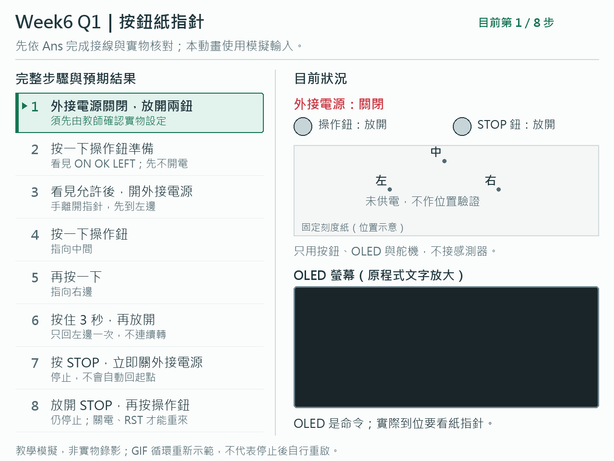
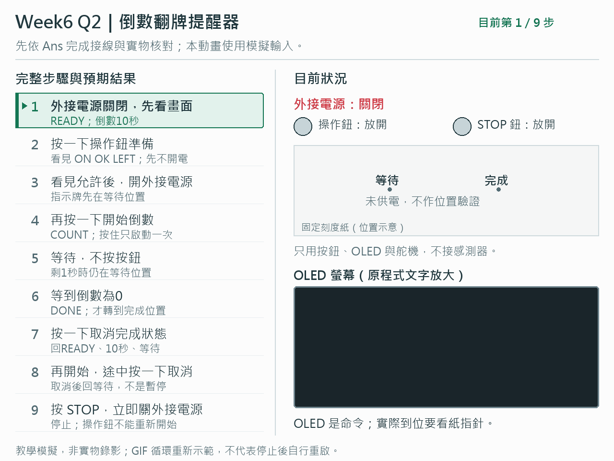
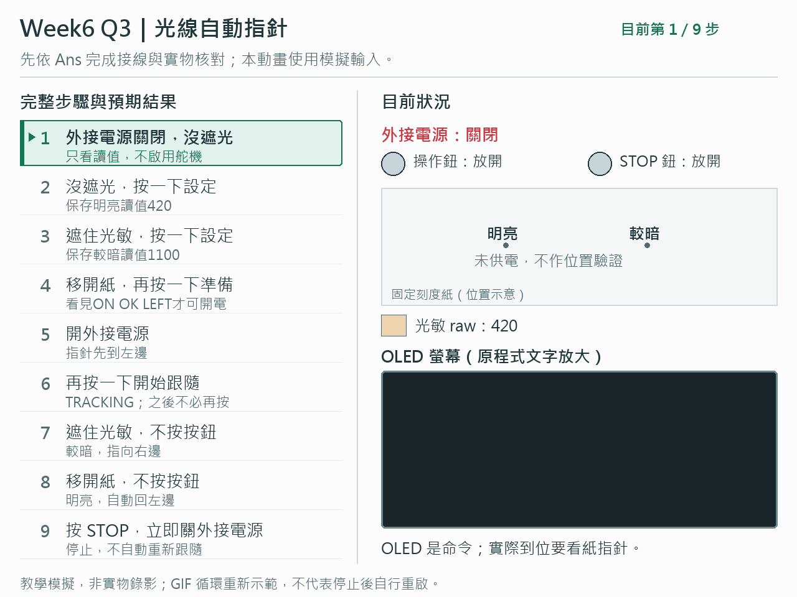
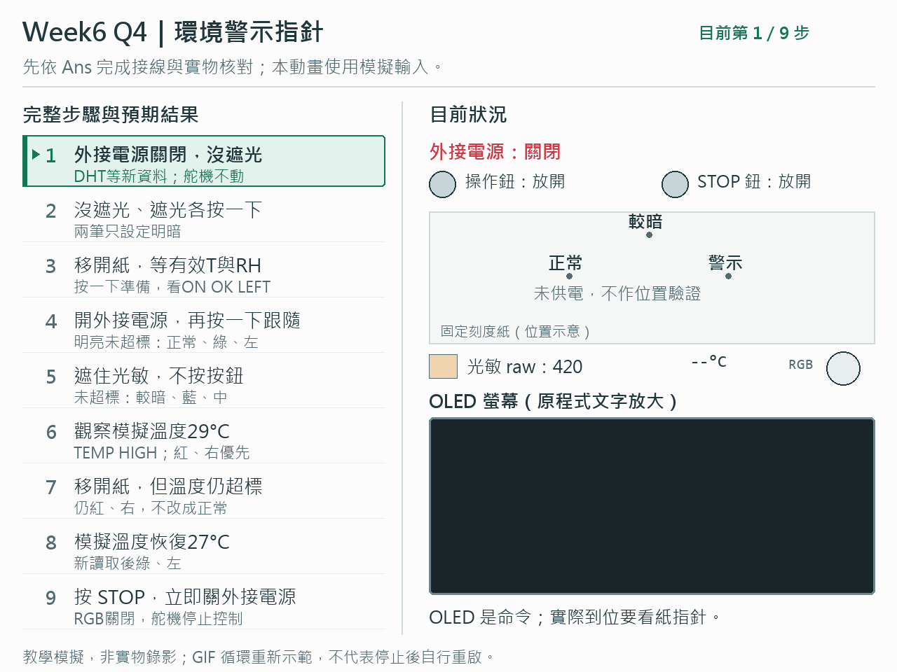

<!doctype html>
<html lang="zh-Hant">
<meta charset="utf-8">
<meta name="viewport" content="width=device-width, initial-scale=1">
<title>Week6 Q1～Q4 動畫</title>
<style>
*{box-sizing:border-box}body{margin:0;background:#fff;color:#20373d;font-family:"Microsoft JhengHei",sans-serif;line-height:1.6;letter-spacing:0}header,main,footer{max-width:1280px;margin:auto;padding:24px}header{border-bottom:1px solid #ced9dd}h1{font-size:28px;margin:0 0 12px}h2{font-size:23px;margin:0 0 8px}p{margin:8px 0}nav{display:flex;flex-wrap:wrap;gap:12px 24px}a{color:#147653}section{padding:20px 0 32px;border-bottom:1px solid #ced9dd;scroll-margin-top:16px}img{display:block;width:100%;height:auto;aspect-ratio:4/3;object-fit:contain}footer{font-size:14px;color:#526b73}@media(max-width:600px){header,main,footer{padding:16px}}
</style>
<header><h1>Week6 Q1～Q4 動畫</h1><nav aria-label="題目"><a href="#q1">Q1 按鈕紙指針</a><a href="#q2">Q2 倒數翻牌</a><a href="#q3">Q3 光線自動指針</a><a href="#q4">Q4 環境警示指針</a></nav></header>
<main>
<section id="q1"><h2>Q1．按鈕紙指針</h2></section>
<section id="q2"><h2>Q2．倒數翻牌提醒器</h2></section>
<section id="q3"><h2>Q3．光線自動指針</h2></section>
<section id="q4"><h2>Q4．環境警示指針</h2></section>
</main>
<footer>教學模擬，非實物錄影。實作前先依 Ans 接線並由教師確認供電、安全行程與 STOP。GIF 循環重新示範，不代表停止後自行重啟。</footer>
</html>
